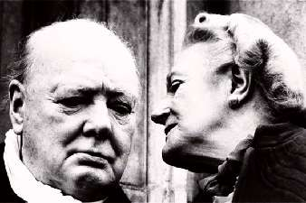

Борис Акунин
Мой календарь
Все сегодня отмечают День Дураков, а мы с вами давайте отпразднуем День Умных.
Повод имеется. 1 апреля родилась Клементина Черчилль (1885–1977), очень умная жена очень умного человека. Многие современники считали, что она была еще умнее мужа, и все согласны, что без нее Уинстон таким великим точно не получился бы. Известно же, что за всяким великим мужчиной стоит великая женщина. (Наоборот же, увы, не бывает).
Это была дама острого интеллекта, большой силы воли и незаурядных дипломатических способностей (которые лучше всего проявлялись в воздействии на собственного супруга). Однажды, в критическую минуту, когда Уинстон был в нерешительности и растерянности, Клементина сказала ему очень важные слова: «Ты силен тем, что ты не совершенен; ты мудр тем, что ты сомневаешься». У бродячего анекдота про жену политика (Хилари Клинтон, Раису Горбачеву и т. п.), которая говорит своему мужу, что на его месте мог бы быть заправщик с бензоколонки, борода растет со времен супругов Черчилль, только в анекдоте про Клементину фигурировал подметальщик улиц.
При этом миссис Черчилль вовсе не ограничивалась ролью жены государственного деятеля, она и сама возглавляла большие начинания - во время обеих войн руководила множеством организаций, работавших на победу. За это ее, разумеется, многократно награждали - вплоть до титула баронессы. Ее супруг, как мы знаем, выше «сэра» не поднялся, так что она и тут его превзошла.
Но нам с вами, конечно, интереснее всего, что Клементина Черчилль еще и кавалер Ордена трудового красного знамени. Эту награду она получила от «партии и правительства» за то, что в 1941 году создала фонд «Красный Крест в помощь России».
Сегодня славим умных женщин и тех мужчин, кому хватило ума связать с ними свою жизнь.